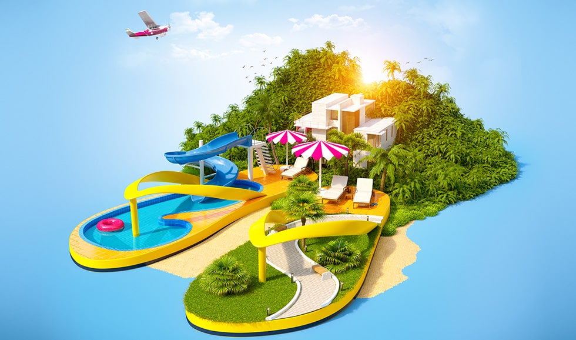

Лучшие подарки путешественникам: топ-12 идей к праздникам
Автор: Евгений Терещенко 17.02.2020
Впереди целый месяц праздников: День всех влюблённых, 23 февраля и 8 марта До Дня Святого Валентина осталось всего полторы недели, а потому ловите 12 идей для подарков Вашим любимым, которые доставят всего за пару дней. А так как Вы читаете блог о путешествиях, то и подарки мы выбрали на любой вкус.